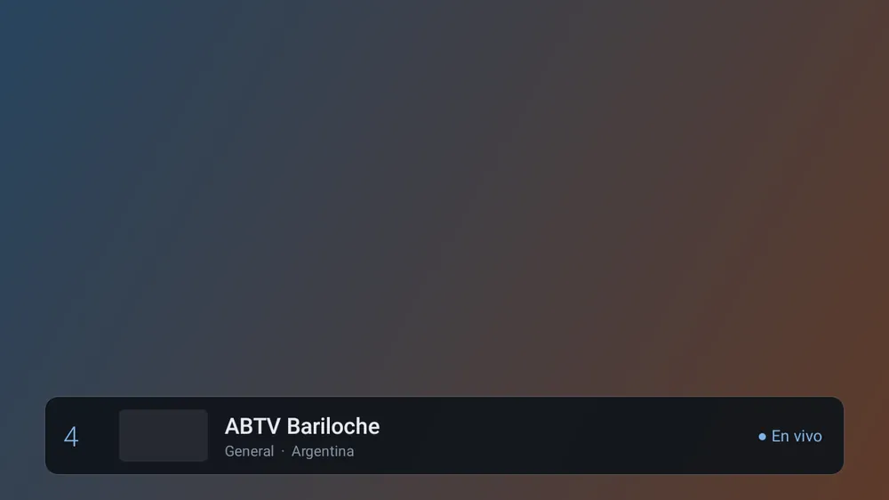
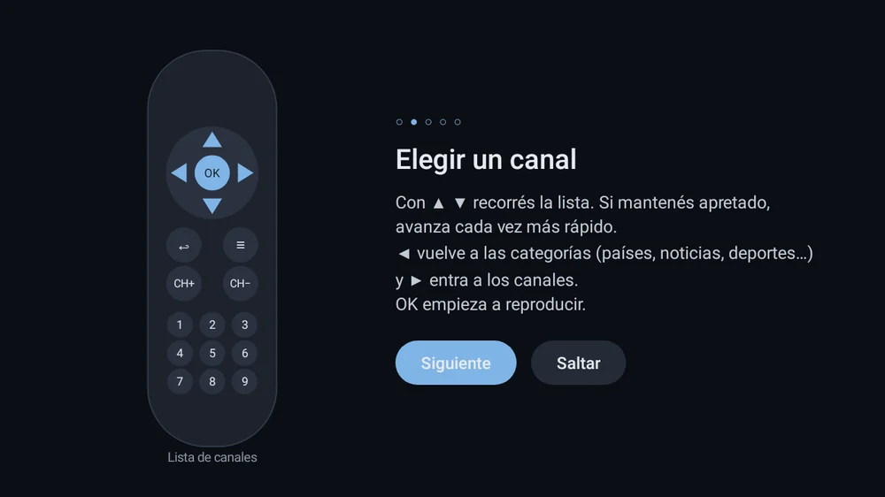
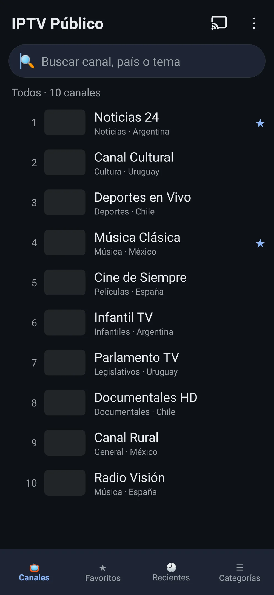
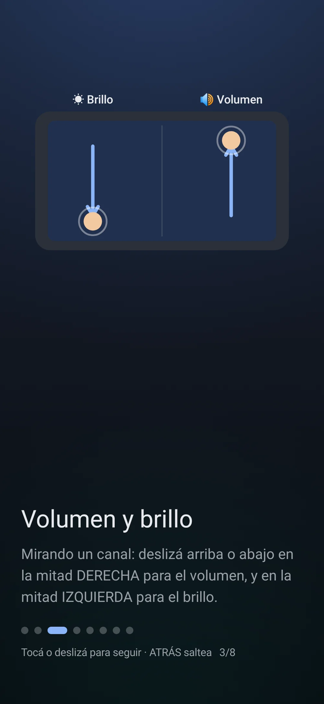

IPTV Público
Miles de canales públicos y gratuitos, en una lista cómoda para el control.
Miles de canales públicos y gratuitos, ordenados para el control remoto.
Hay dos versiones: la de TV se maneja con el control remoto; la de celular, con el dedo (gestos para volumen, brillo, cambiar de canal y zoom, y botón para enviar a la tele). Instalá la que corresponda a tu equipo. Es la misma licencia: vale para un equipo por vez y con tu código de compra la podés pasar de la TV al celular o al revés. Cada equipo tiene su prueba de 7 días.
Sin publicidad. Nunca.Pagás una vez y la app es tuya: sin banners, sin videos que te hacen esperar, sin interrupciones. Por qué cobramos







Versión para celular: lista táctil y buscador

Celular: tutorial de gestosLo que la hace distinta
- 📡 Listas abiertas y legales, por categoría.
- ⭐ Favoritos, recientes, búsqueda e imagen en imagen.
- 🔗 Se integra con Launcher TV (TV en vivo y guía).
Qué es
Reproductor de canales de TV públicos y gratuitos (listas abiertas de iptv-org y TDTChannels) y listas M3U propias, con favoritos, recientes, búsqueda e imagen en imagen. No incluye ni vende contenido: sólo reproduce listas públicas.
Qué hace
- Reproduce miles de canales de TV públicos y gratuitos (listas abiertas de iptv-org y TDTChannels), ordenados por categoría.
- También abre tus propias listas M3U. Tiene favoritos, recientes, búsqueda e imagen en imagen.
- En el celular: deslizá a la derecha para el volumen, a la izquierda para el brillo, de costado (o doble toque) para cambiar de canal, y pellizcá para hacer zoom.
- Enviar a la tele desde el celular: Chromecast (necesita Servicios de Google Play), Smart TV con DLNA en el mismo Wi-Fi, o abrir el canal en otro reproductor. Algunos canales sólo se ven en el celular.
- No incluye ni vende contenido: sólo reproduce listas públicas.
Requisitos
- TV: Android TV / TV box con Android 9 o superior
- Celular: Android 9 o superior
- Conexión a internet
Funciones
- Listas públicas + M3U propias
- Favoritos, recientes y búsqueda
- Imagen en imagen
- Integración con Launcher TV
- Navegación con el control
Cómo se instala
- TV: instalá el APK de TV con Downloader o un pendrive y abrila; elegí una categoría y un canal con el control.
- Celular: descargá el APK de celular, abrilo y permití «Instalar apps de origen desconocido» si lo pide; tocá un canal para verlo.
- Para comprar: «Activar» → «Comprar con Mercado Pago».
Novedades
- 2.2.4 (TV) · 2.3.2 celular — Licencia: en el primer arranque espera la sincronización con el servidor antes de pedir activar si el reloj del equipo saltó (no aparece «Vencida» por error).
- 2.2.3 (TV) · 2.3.1 celular — Reloj estilo decodificador: la hora (HH:mm) arriba a la derecha, semitransparente y legible sobre el video. En las listas queda fija; mirando un canal aparece junto con el nombre al cambiar de canal o con OK/INFO.
- 2.2.2 (TV) — Aviso de prueba gratis más claro (te dice cuándo vence), días restantes a la vista y corrección de la prueba con el reloj del equipo mal configurado.
- 2.3.0 celular — Nueva versión para celular: todo con el dedo, gestos en el reproductor y botón para enviar a la tele (Chromecast o DLNA).
- 2.2 — TV: rediseño estilo Launcher TV y tutorial renovado.